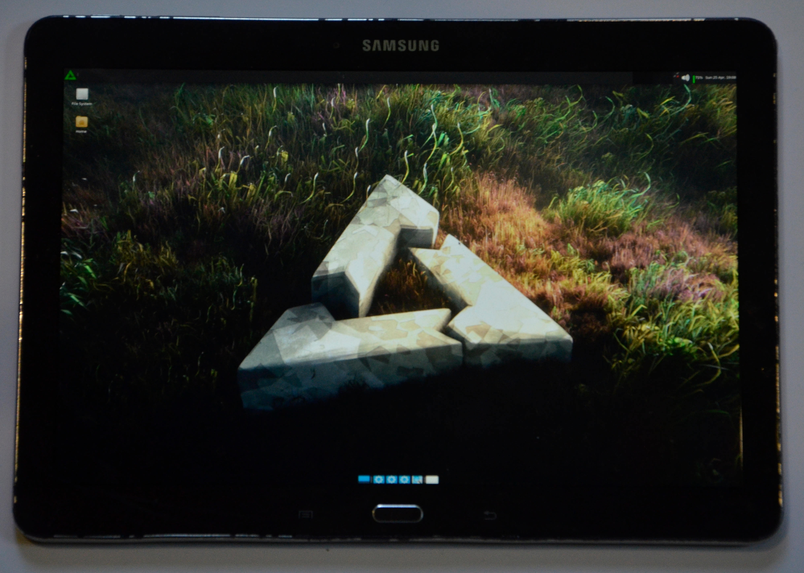

Samsung Galaxy Note 10.1 2014 (samsung-n1awifi)
Jump to navigation
Jump to search
|
 n1awifi with the xfce GUI | |
| Manufacturer | Samsung |
|---|---|
| Name | Galaxy Note 10.1 (2014) |
| Codename | samsung-n1awifi |
| Released | 2013 |
| Category | testing |
| Original software | Android 5.1.1 |
| Hardware | |
| Chipset | Samsung Exynos 5420 |
| CPU | 1.9 Ghz A15 Quad + 1.3 Ghz A7 Quad |
| GPU | Mali-T628 MP6 |
| Display | 2560x1600 |
| Storage | 16/32 GB |
| Memory | 3 GB |
| Architecture | armv7 |
{kind=link}
| USB Networking |
Partial
|
|---|---|
| Flashing |
Works
|
| Touchscreen |
Partial
|
| Display |
Works
|
| WiFi |
Works
|
| FDE | |
| Mainline |
Broken
|
| Battery |
Works
|
| 3D Acceleration | |
| Audio | |
| Bluetooth | |
| Camera |
Broken
|
| GPS | |
| Mobile data | |
| SMS | |
| Calls | |
| USB OTG | |
| NFC | |
| Accelerometer | |
|---|---|
| Magnetometer | |
| Ambient Light | |
| Proximity | |
| Hall Effect | |
| Ir TX | |
|---|---|
| TrustZone | |
Contributors
- Michaszek8
Maintainer(s)
Users owning this device
What does not work
- KDE Plasma (boots into black screen)
- Any DE that uses Wayland
- Stylus
-
Touchscreen stops working after some minutes of uptime and after rebootThe touchscreen does technically work, so does OTG mouse as the cursor does move around, but at least in Xfce4 the DE stopped responding to any input events. It's still "alive" (the clock does update, and anything that's running will keep running), it's just no longer responding to any mouse events or keystrokes. Do note, however, thatCtrl+Alt+F1, etc. still seems to work, as when switching to a tty, the cursor disappear, and when switching back to GUI withCtrl+Alt+F7, the cursor comes back, however the tty could not be shown (the screen is stuck to the GUI no matter what I tried). Proof of touch working can be seen from ssh by using e.g.evteston/dev/input/event2. - WiFi could connect, but the system cannot assign any IP address to the
wlan0interface.
Flashing
After pmaports!3056 flashing can be done through Heimdall. Alternatively, one can use TWRP.
Flashing with heimdall
Enter flash mode by keeping Power + Volume Down pressed.
Then use pmbootstrap flasher flash_kernel, reboot once again in flash mode and use pmbootstrap flasher flash_rootfs.
You can do the full flashing at once with the following commands (supposing heimdall is in your PATH):
$ pmbootstrap export
$ heimdall flash --BOOT /tmp/postmarketOS-export/boot.img --SYSTEM /tmp/postmarketOS-export/samsung-n1awifi.img
Flashing with TRWP
After having installed TRWP, press and hold Power + Volume Down + Home. Press Volume Up when prompted.
To create a TWRP flashable zip:
$ pmbootstrap install --android-recovery-zip
$ pmbootstrap export
Run adb push /tmp/postmarketOS-export/pmos-samsung-n1awifi.zip to copy zip to the device, reboot to TWRP and install the zip and then reboot to system. You can also use adb sideload as instructed in recovery zip installation.
See also
- pmaports!2135 Initial merge request
- Exynos5420 kernel
- Device package
- Kernel package